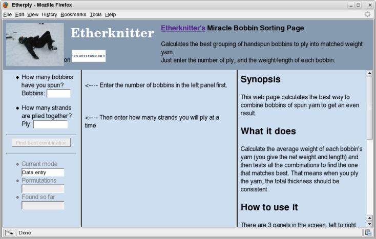
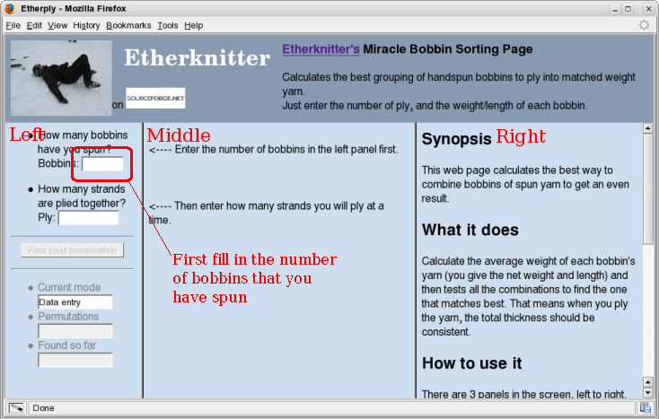
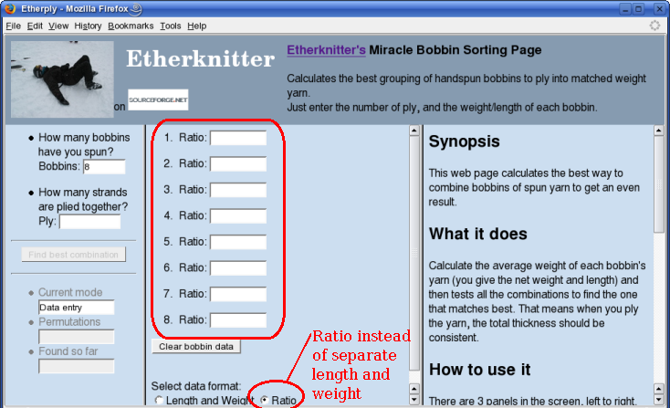
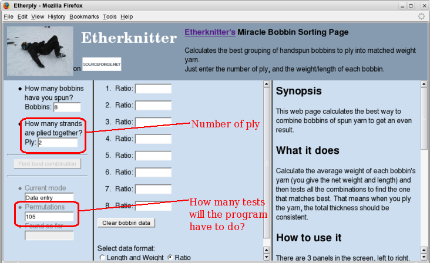
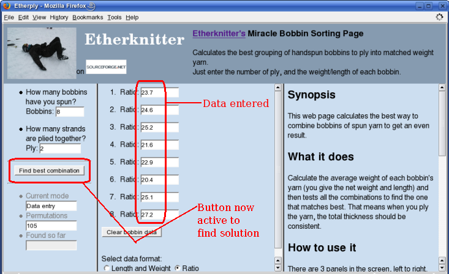
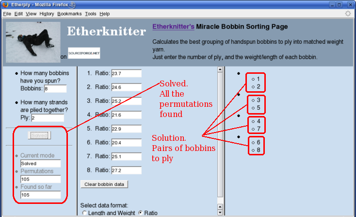
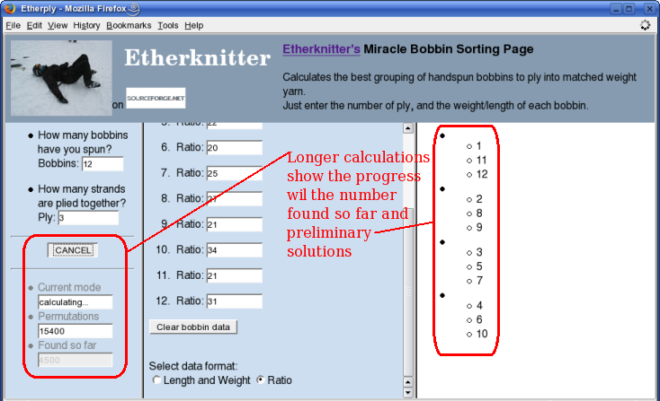
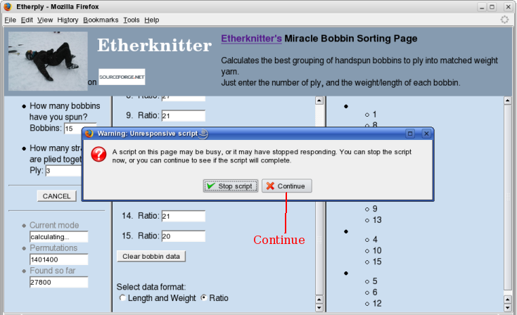

Initial Screen
This is the initial working page for calculating the best plying strategy. Note that the lower page is separated into three panels. We'll start with the left panel.
Bobbins
Enter the number of bobbins you have spun. That will trigger the middle panel to change to gather individual bobbin data.
Length and Weight

We need to enter data for each of our bobbins. The number for each line (1,2,3...) will be used to identify the bobbins in the solution.
Ratio
You may prefer to enter the weight/length ratio after doing the calculation yourself.
Ply
How many strands will you ply at a time? The program will calculate the number of permutations it will have to test.
Enter data for bobbins
Enter all you data (length and weight or ratio) and the Find best combination button will activate. Press it.
Solved
After some calculations, the solution is shown. In this case, there are 4 pairs of bobbins, 1&2 3&5 4&7 and 6&8. Each pair's grist is the best match for the other pairs.
Long calculation
For longer calculations (more permutations to be tested), intermediate results and an update of the solutions tested so far is shown.
Very long calculation
For a very long calculation, your browser may get concerned that the program isn't ever going to end.
Just press Continue. You may have to do this several times.